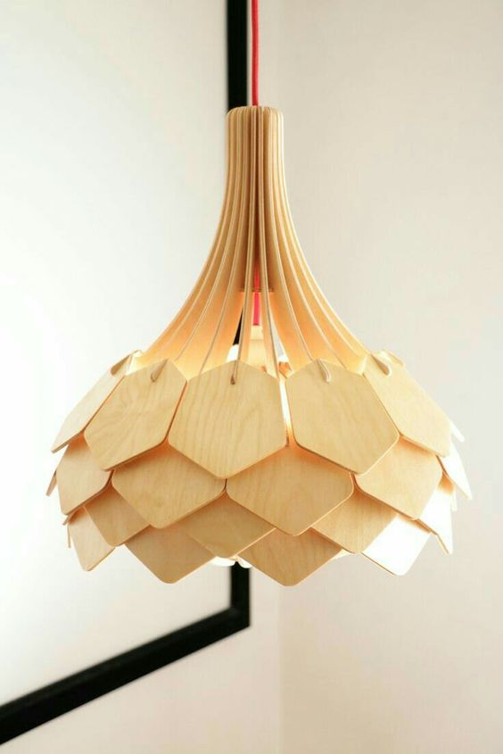
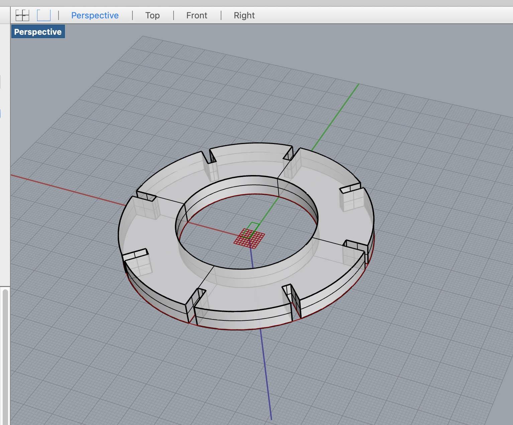

Assignment 8: Final Project

While I think a traditional desktop phone was the first item I ever dissected, I'm pretty sure a lamp was second. I am fascinated by the parts that make the whole, it was an easy choice to make a lamp for my final project.
Journey to the Final Piece


I tested my design with cardboard and scissors just to work out some angles and overall design. It comes from years of feeling fairly confident with physical material and less than confident with the math required to create it digitally.

I then worked on creating my bulb and holder in OnShape so I could work out the fit and angles around it.

This is the part that will fit over the existing lamp, designed initially in OnShape, but geometries solidified in Rhino using Grasshopper.

I then worked on designing the arms for the two tiers. The shorter one will be slightly thicker near the bottom to offset the parts


The first version didn't visually flow. I used standard geometries in OnShape. While the polygon is nice, it lacks the energy I was hoping for so I redesigned it to be smaller at the top

I sketched this with lines and mirrored, then extruded the shape.

This flowed a little bit better visually.
I then exported my OnShape files in Dxf, imported them into Rhino, converted them to an ai file and then opened them in Illustrator for cutting.